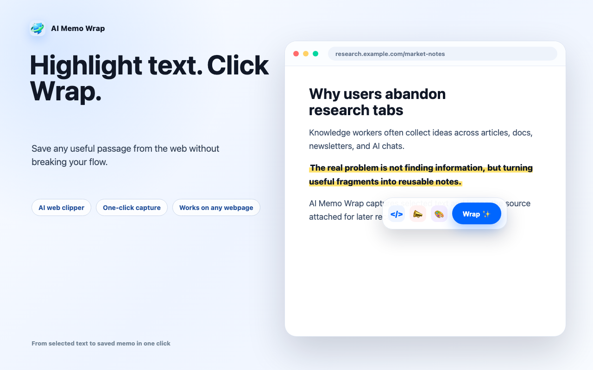
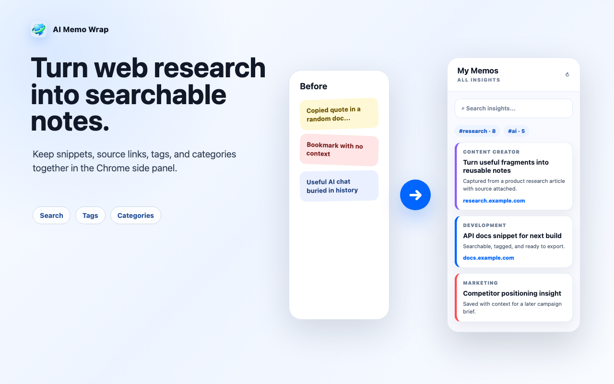
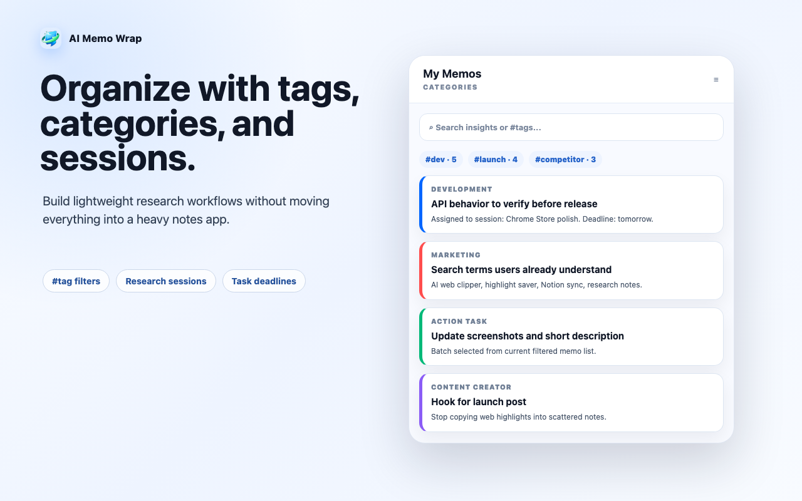
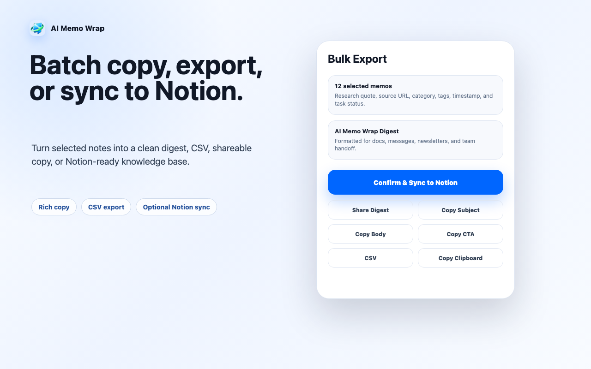
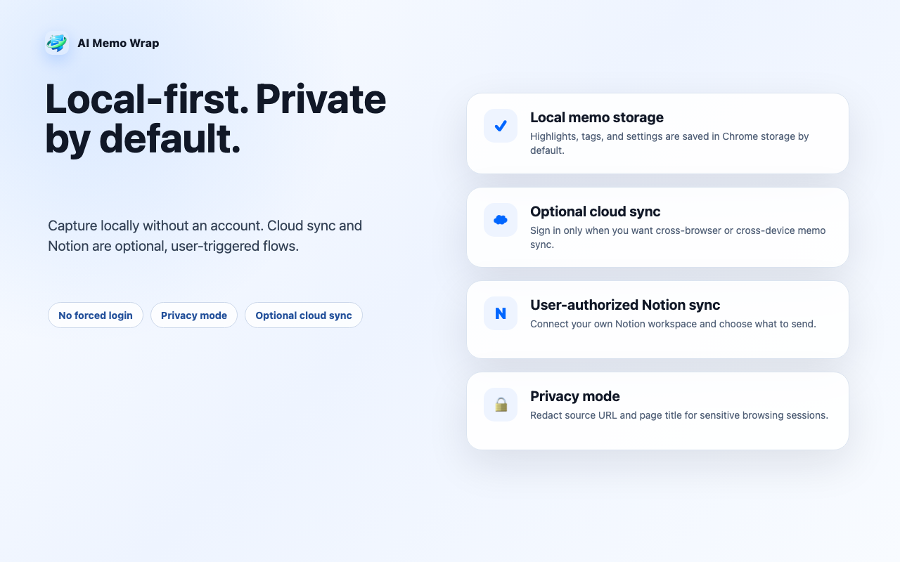

STEP 1
Highlight
Select useful text on any webpage.
AI web clipper for searchable notes
Save useful passages from any webpage as organized notes with tags, categories, search, batch export, and optional Notion sync.
What you get
One-click web capture
Highlight text and save it without copying into scattered notes.
Searchable knowledge base
Find notes with search, #tags, categories, and sessions.
Batch output
Copy rich digests, export CSV, or prepare reusable content blocks.
Local-first privacy
Use local storage by default; cloud and Notion sync are optional.
Chrome Web Store preview
A five-step view of the AI Memo Wrap workflow: capture, organize, export, and keep control of your data.





STEP 1
Select useful text on any webpage.
STEP 2
Save the snippet with source context.
STEP 3
Use tags, categories, search, and sessions.
STEP 4
Copy, share, export CSV, or sync to Notion.
Install AI Memo Wrap and turn scattered browsing into a searchable note workflow.